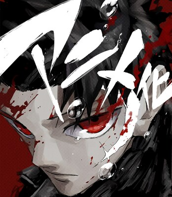
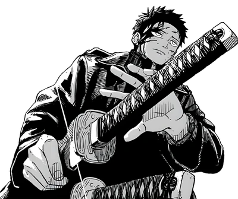
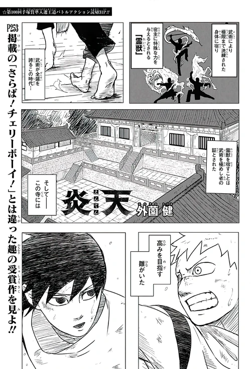
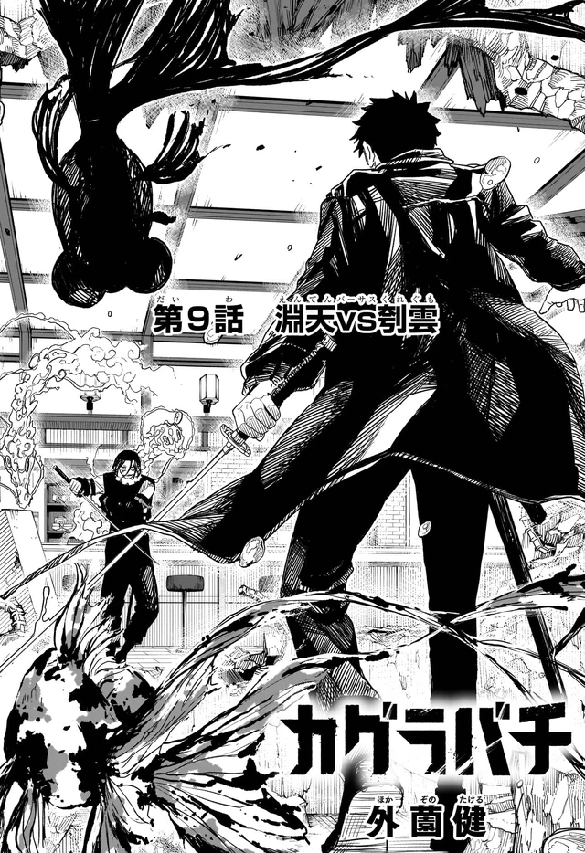
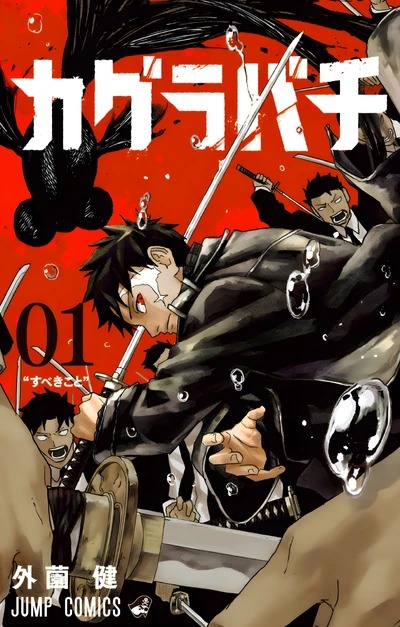
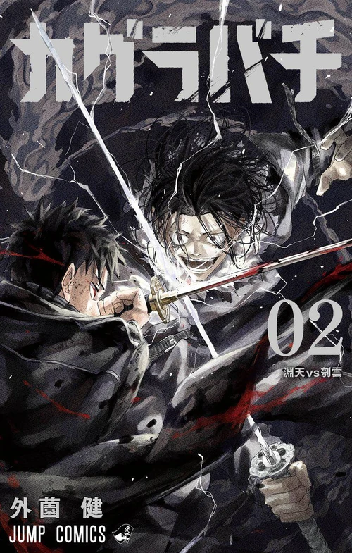
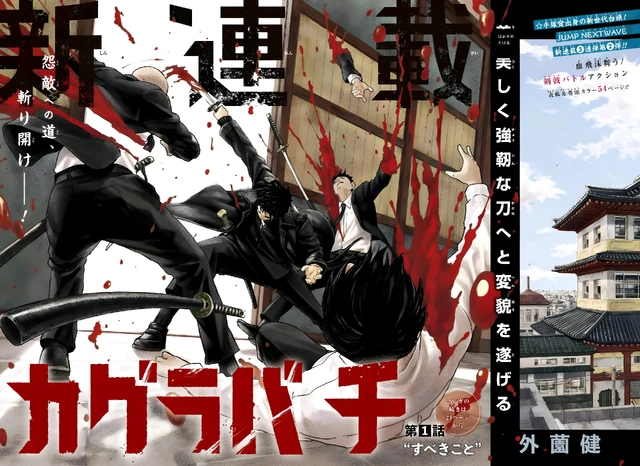
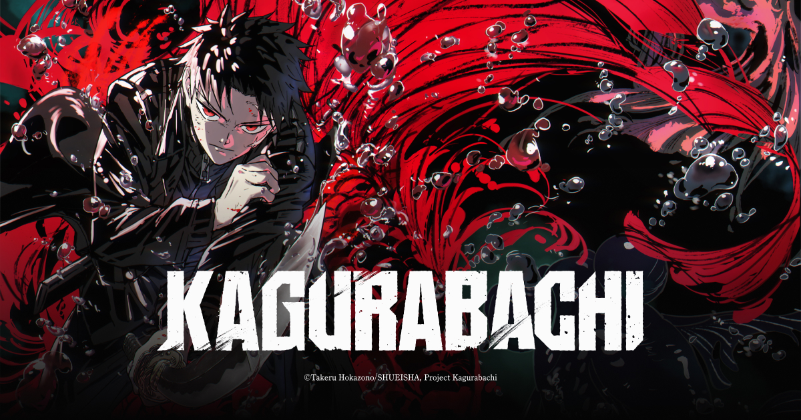

Home / Guide
The workshop door
Guide工房案内
The homepage keeps these as one-line rows. These pages are the full versions, pictures, tables, and the extra context that would have wrecked the front door.

The series
What Kagurabachi is, who draws it, and how it landed.

The premise
The smith, the raid, the goldfish, the job.

The blades
Seven swords pictured. Two wartime ones stay unnamed.

The story
Part 1 in three movements. Part 2 after the page turn.

On paper
Jump, volumes, four million copies, the 2027 anime.
Characters
Everyone with a file.

Manga guide
ISBNs, chapters, jackets.

First-read notes
Twelve things chapters 1–20 will not spell out.
Who is who
Names the homepage rows could not hold.
Part 1, the long cut
Mission through Swordsmith, in full.

How to watch
April 2027 countdown. Crunchyroll. Legal doors.
How to read
Chapter 1 through Part 2. Volumes versus the weekly issue.